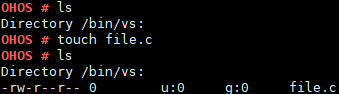

touch¶
Command Function¶
This command is used to create an empty file in a specified directory.
If this command is executed to create an existing file, the execution will be successful but the timestamp will not be updated.
Syntax¶
touch [filename]
Parameter Description¶
Table 1 Parameters
Parameter | Description | Value Range |
|---|---|---|
filename | Indicates the name of the file to be created. | N/A |
Usage¶
The touch command creates a read-write empty file.
The touch command creates only one file at a time.
 NOTICE: If you run the touch command to create a
file in a path storing important system resources, unexpected
results such as a system breakdown may occur. For example, if you
run the touch uartdev-0 command in the /dev path, the
system may stop responding.
NOTICE: If you run the touch command to create a
file in a path storing important system resources, unexpected
results such as a system breakdown may occur. For example, if you
run the touch uartdev-0 command in the /dev path, the
system may stop responding.
Example¶
Enter touch file.c.
Output¶
Figure 1 Creating file.c
